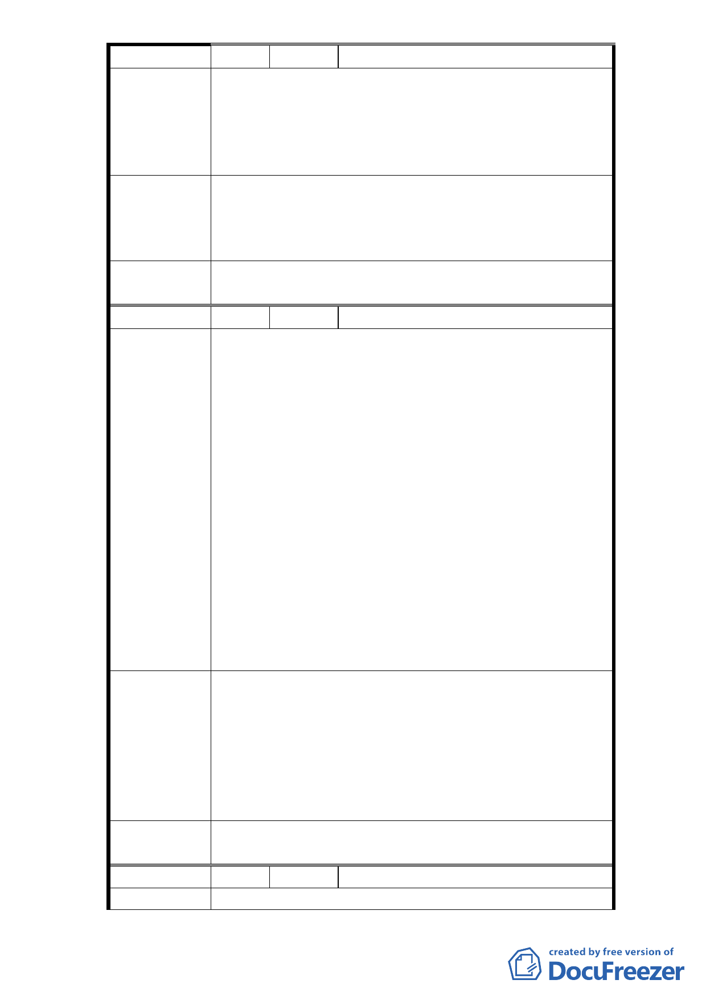

編 號 3 陳情人 楊麗美
1、根據台北市政府土地使用分區管制規則，明訂大學
建蔽率 40％以下。
陳 情 理 由 2、根據市府向監察院遞文之主計畫，台北市政府有承
諾要蓋在 40％之建蔽率內，市府一定要遵守。
3、變更還須經過審議委員會審議。
1、如上述，希望一切依法，勿打混仗。
建議辦法
2、體育學院用地絕不可與市府所屬體育場合併規劃，
這是不合法的。
3、變更還須經過審議委員會審議。
委員會決議
因本案大學用地係屬公共設施用地，依規定不必擬訂
細部計畫，故本案予以退回。
編 號 4 陳情人 邱澄清
1、台北市政府（臺北體育學院）所提細部計畫有關建
蔽率不得超過 50％，違反「臺北市土地使用分區管
制規則」第八十三條規定「大學用地之建蔽率為 40
％」之規定。
2、依 98 年 8 月 13 日監察院教育及文化、內政及少數
民族、財政及經濟委員會第 4 屆第 6 次聯席會議決
議（98）院台教字第 0982400298 號函之調查報告
陳情理由
第 7 頁「詢據台北市政府表示：完成都市計畫法定
程序後，將依都市計劃核定學校用地之建蔽率規
定，調整開發量體，以符合變更後之建蔽率規範。
為解決本案都市計畫變更後之建蔽率問題現階段
解決方式朝向體育館減建二層並調整為露天球場
方案辦理，必使建蔽率符合現行大專用地建蔽率為
40％之規定」。
3、目前之建物有的尚未興建，請依法定程序進行，不
要違法偷渡。
1、本計畫區之建蔽率請依法行政更改為 40％。
2、請台北市政府教育局、都發局、台北體育學院遵守
對監察院調查報告之依法承諾，建蔽率為 40％以
建 議 辦 法 下。
3、（1）依法建蔽率應為 40％以下。（2）要再經都市設
計審議委員會，依建蔽率為 40％以下之原則，再審
議修正。
委員會決議
因本案大學用地係屬公共設施用地，依規定不必擬訂
細部計畫，故本案予以退回。
編 號 5 陳情人 孟靜
陳 情 理 由 1、體院宜採行圍牆設計，為校區設施安全之考量。
-5-